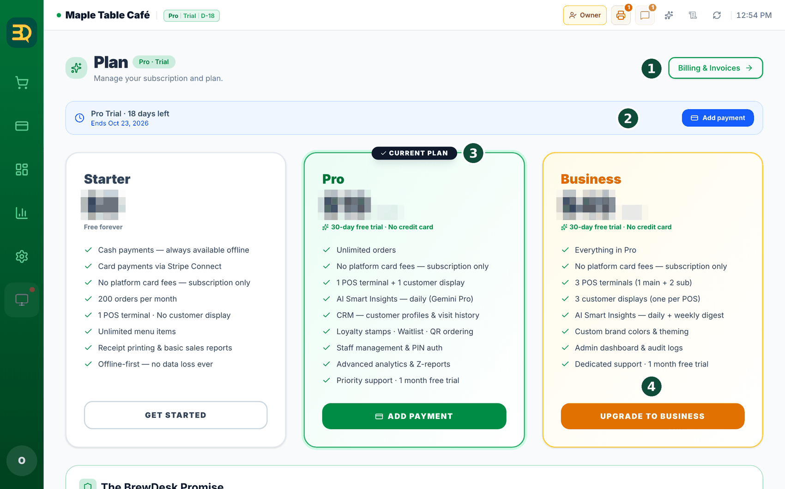
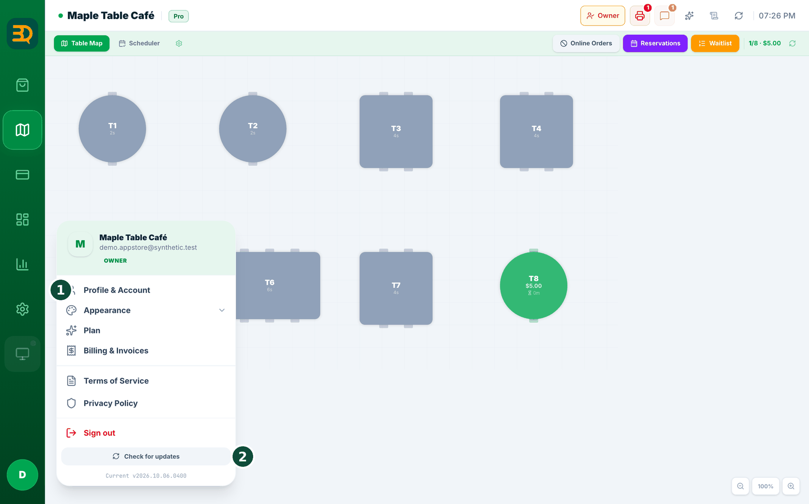
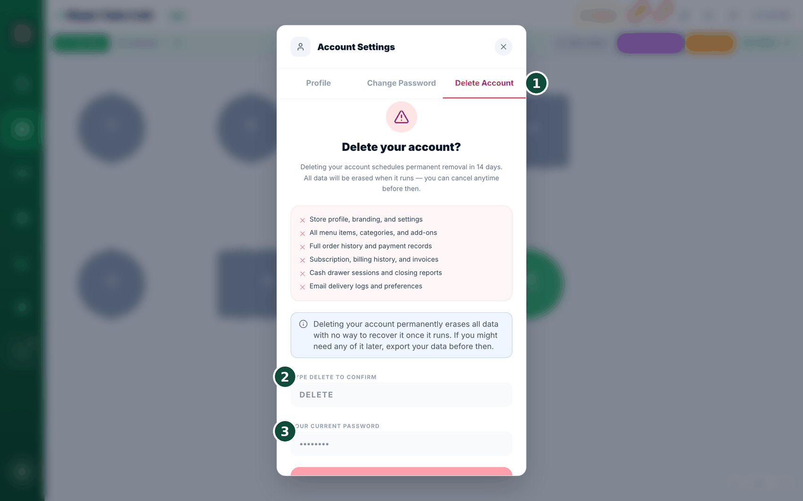
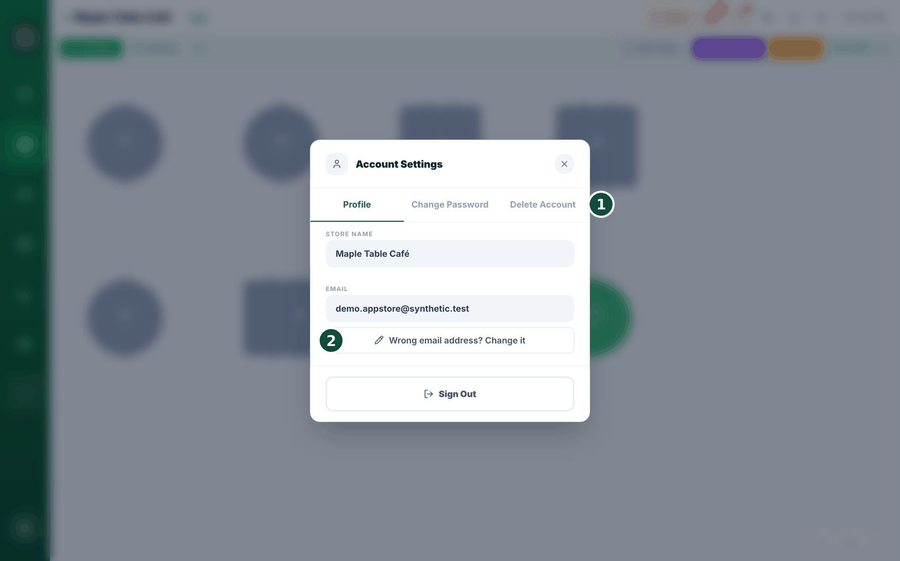
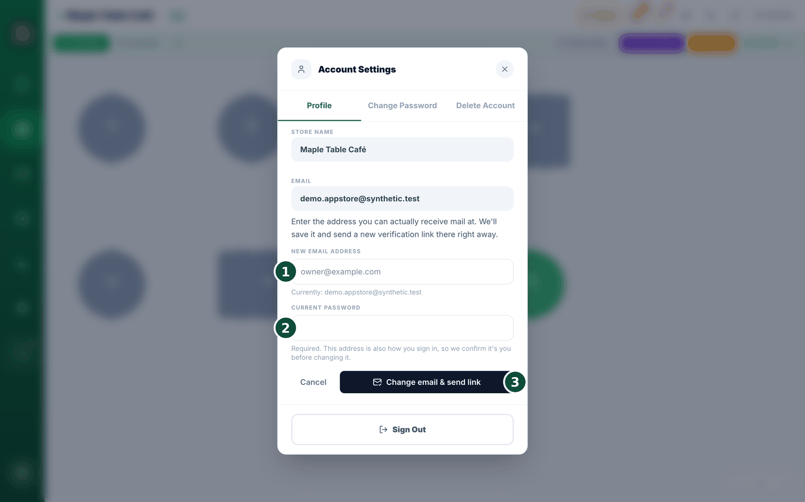

14Su plan y facturación
Un plan es el nivel de BrewDesk que usa. Puede empezar gratis y subir de plan más adelante. Todo se gestiona en un solo lugar.

- Puede quedarse en el plan Starter, que es gratuito.
- O puede probar Pro o Business gratis durante un mes. No necesita tarjeta de crédito para empezar la prueba.
- Cuando decida continuar, agregue un medio de pago (como una tarjeta).
- Para revisar su plan, su tarjeta de pago o sus facturas, vaya a Billing.
- El precio se ajusta al país en el que está.
Revise su tienda desde el teléfono: inicie sesión en la app del propietario (brewdesk.io/owner); su guía se abre desde el botón Manual en la parte superior de la app del propietario.
Eliminar su cuenta
¿Cierra la tienda o deja BrewDesk? Puede eliminar su cuenta. Nada desaparece en el momento en que lo toca: se ejecuta 14 días después, y puede deshacerlo en cualquier momento antes de eso.
Abra los ajustes de su cuenta desde el menú de la cuenta arriba a la derecha y luego la pestaña Delete Account (Eliminar cuenta). Solo el propietario puede hacerlo.


- Lea la lista de lo que se elimina: datos de la tienda, menú, historial de pedidos y pagos, suscripción y facturas, informes de cierre, todo.
- Si es posible que necesite algo de eso más adelante, toque Export data (Exportar datos) y guarde primero una copia. Una vez ejecutado, no hay forma de recuperarlo.
- Escriba DELETE en mayúsculas en el campo de confirmación.
- Toque Send verification code (Enviar código de verificación). Se envía un código de 6 dígitos al correo del propietario.
- Ingrese el código del correo. El botón muestra entonces la fecha real (por ejemplo, "Delete account on August 14, 2026"); tóquelo y la eliminación queda programada y se cierra su sesión.
Es bueno saberlo: guardamos un registro aparte de las solicitudes de eliminación y de las cancelaciones, así que si alguna vez surge un "yo no eliminé eso", se puede comprobar.
Cambiar el correo de inicio de sesión
Si escribió mal su correo al registrarse, el correo de verificación va a un lugar al que no puede acceder, y reenviarlo solo lo vuelve a mandar al mismo lugar equivocado. Ahora puede corregir la dirección usted mismo.
Menú de la cuenta (arriba a la derecha) → Account Settings (Configuración de cuenta) → pestaña Profile (Perfil) → "Wrong email address? Change it". Solo en la cuenta del propietario.


- Toque "Wrong email address? Change it". El formulario muestra su dirección actual para que vea qué está mal.
- Escriba la New email address (Nueva dirección de correo): aquella en la que realmente puede recibir correo.
- Escriba su Current password (Contraseña actual). Es obligatorio: su correo también es la forma de iniciar sesión, así que BrewDesk comprueba que realmente sea usted.
- Toque Change email & send link (Cambiar correo y enviar enlace). Verá "Saved. A verification link is on its way to … — open it to unlock BrewDesk."
- Abra su correo y toque el enlace. Listo.
Socio instalador
Algunas tiendas las configura un instalador o distribuidor local, que sigue ocupándose del menú y la configuración por usted. Si es su caso, puede ver exactamente quién tiene ese acceso y terminarlo usted mismo cuando quiera.
Menú de la cuenta (arriba a la derecha) → Installer partner. Solo en la cuenta del propietario, y la opción del menú solo aparece cuando hay una conexión aprobada; no hay menú en las tiendas que no usan un instalador o que solo tienen una solicitud pendiente.
- Ábralo. Verá quién está conectado y desde cuándo ("Connected since 3 Feb 2026") y, si otro instalador lo ha solicitado y sigue esperando, también se muestra "Awaiting your approval" con la fecha de la solicitud.
- Para terminarlo, toque Disconnect (Desconectar) junto a su nombre.
- Confirme: "This installer will lose access to this store immediately. You can approve them again later if you change your mind."
Mientras un instalador trabaja en su tienda en su nombre, su nombre aparece en su pantalla y queda registrado junto a lo que hizo en su registro de actividad, así que "¿quién cambió este precio?" siempre tiene respuesta.
Temas relacionados
¿Necesita más ayuda?
Puede enviar un ticket de soporte desde la app en Settings › Support.